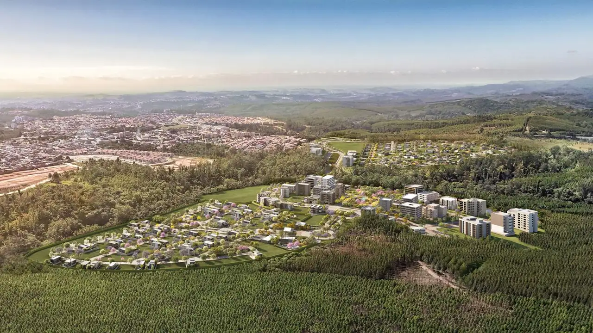
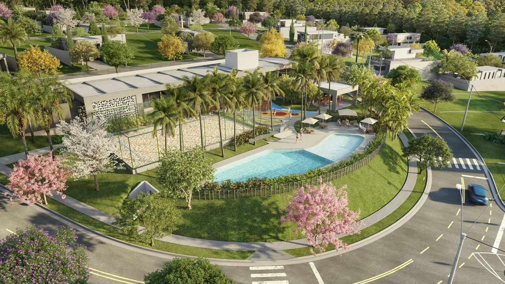
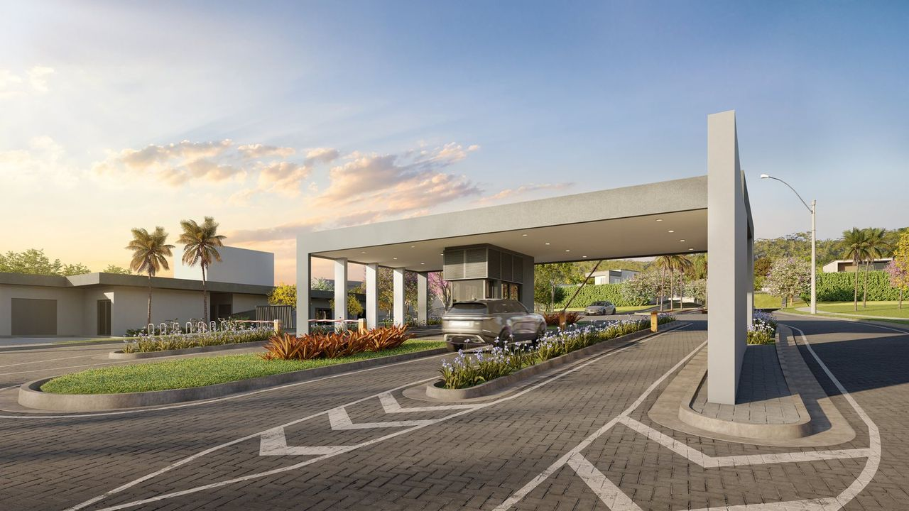
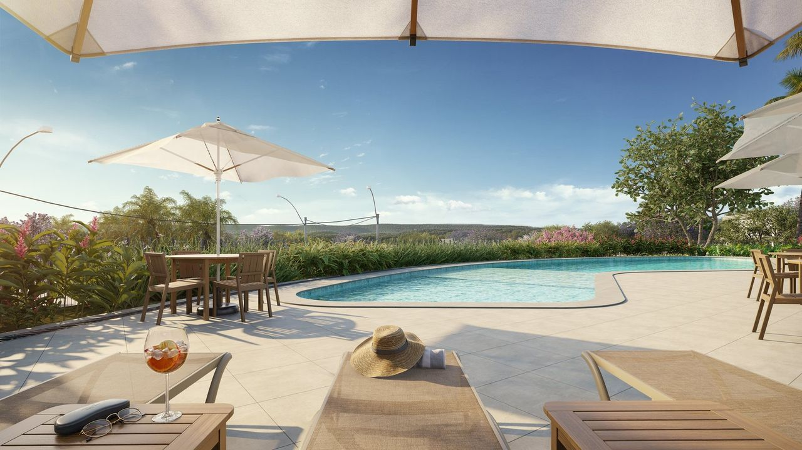
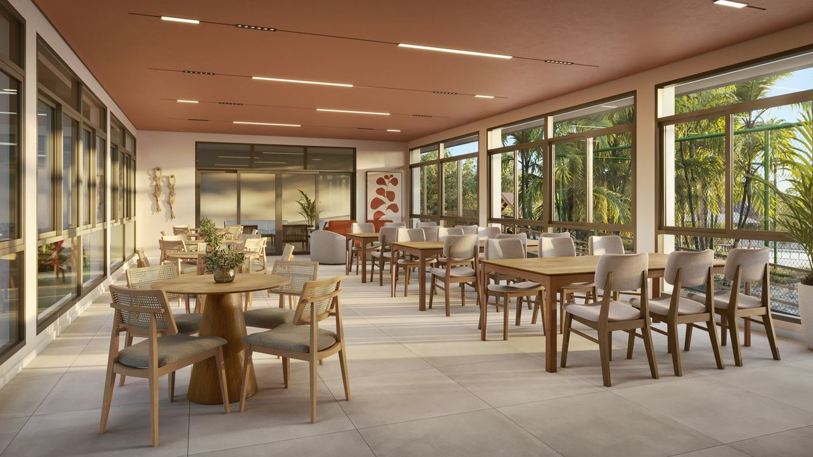

Votorantim/SP · realização Alphaville
Atualizado em 27/11/2026 · tabela de vendas Alphaville de 19/11/2026 · Fabio Correia, CRECI 303686-F
O Parque Alphaville Alvorada é um loteamento residencial e comercial da Alphaville em Votorantim, com 630 lotes, registrado em 09/06/2026. Os lotes residenciais ficam em dois residenciais com clube e portaria: o Terras Alpha Alvorada 1, com 322 lotes, e o Terras Alpha Alvorada 2, com 196, segundo a Alphaville. Os 518 lotes residenciais, de 229,23 a 825,28 m², constam na tabela de vendas da Alphaville de 19/11/2026, que não separa os dois residenciais. Previsão de entrega em 09/2029.
A partir de R$ 290.560valor base na tabela de 19/11/2026 (nov/2026) · lote 36 da quadra 17, de 246,49 m² · custas de escrituração e corretagem à parte
Imagem ilustrativa (fotomontagem do loteamento)
O empreendimento
O Parque Alphaville Alvorada é o nome comercial do Loteamento Residencial e Comercial Gleba A27, em Votorantim/SP: 630 lotes em uma gleba de 662.885,76 m². A realização é da Alphaville, e a vendedora é a Alvorada SPE Terrenista Empreendimentos Imobiliários Ltda. (CNPJ 61.840.121/0001-36). O material de divulgação de julho/2026 anunciava o lançamento dos residenciais Terras Alpha Alvorada 1 e 2 para 08/08/2026; as minutas de contrato dos lotes comerciais falam em lançamento do empreendimento ao público em junho de 2026. Confirme no atendimento se os lotes residenciais já estão liberados para venda.
Os lotes residenciais estão em dois residenciais da linha Terras Alpha, cada um com o seu clube e a sua portaria: o Terras Alpha Alvorada 1, com 322 lotes, e o Terras Alpha Alvorada 2, com 196. O material de venda chama os dois de "residenciais fechados", com portaria 24h (no Alvorada 1, "portaria com segurança 24h"). Na forma jurídica, o empreendimento é um loteamento: o nome registrado, que o próprio material de venda informa, é Loteamento Residencial e Comercial Gleba A27, e as minutas dos lotes comerciais dizem que o registro foi feito pela Lei 6.766/79.
Além dos 518 lotes dos dois residenciais, o projeto urbanístico da Alphaville lista 54 lotes comerciais, 35 de uso misto, 19 multifamiliares e 4 lotes da área do clube e apoio, que completam as 630 unidades. Os comerciais, mistos e multifamiliares não têm preço no material recebido; esta página trata dos lotes residenciais.
lotes no loteamento
lotes no Terras Alpha Alvorada 1
lotes no Terras Alpha Alvorada 2
lotes na tabela de 19/11/2026
Imagens
Todas as imagens são ilustrativas: fotomontagens e perspectivas do material da Alphaville, com a vegetação em fase adulta (ela é entregue em mudas). As casas e os prédios das fotomontagens mostram uma ocupação possível dos lotes, que depende do que cada comprador construir.





Lotes
Pela ficha técnica da Alphaville, o lote mínimo dos dois residenciais é de 253 m², com 11,5 m de frente e 22 m de fundo, e o Terras Alpha Alvorada 2 vai até 725 m²; do Terras Alpha Alvorada 1, o material informa o lote mínimo, mas não o máximo.
Os 518 lotes residenciais constam na tabela de vendas de 19/11/2026, em 23 quadras, de 229,23 a 825,28 m²: 301 deles têm 253,00 m², 9 têm menos de 253 m² (o menor, o lote 02 da quadra 32, tem 229,23 m²) e o maior, o lote 30 da quadra 09, tem 825,28 m². A tabela não diz a qual residencial cada quadra pertence: confirme no atendimento o residencial e a metragem do lote escolhido.
| Residencial | Lotes | Metragem | Clube |
|---|---|---|---|
| Terras Alpha Alvorada 1 | 322 | a partir de 253 m² (máximo não informado) | piscina adulta e infantil, salão de festas, academia, churrasqueira, quadra de areia, playground e horta |
| Terras Alpha Alvorada 2 | 196 | 253 a 725 m² | piscina adulta e infantil, salão de festas, academia, churrasqueira, playground e horta |
Pelo regulamento construtivo da Alphaville: ocupação de até 55% do lote, ao menos 30% de área permeável, coeficiente de aproveitamento 1,0, recuos de 5 m na frente, 1,5 m nas laterais e 2 m no fundo, e até 2 pavimentos.
A ficha do Alvorada 1 não veio no material recebido. Peça o regulamento construtivo do residencial antes de escolher o lote.
Nas minutas dos lotes comerciais, a filiação à Associação Parque Alphaville Alvorada é obrigatória, com contribuição mensal a partir da posse. Pelas mesmas minutas, ela cuida da administração geral do loteamento, sobretudo das áreas fora do fechamento dos residenciais, e reúne também as associações dos residenciais. A associação e a contribuição do lote residencial são confirmadas no atendimento; o valor não consta do material.
Pela planta de implantação, as avenidas 1, 2 e 3 do loteamento têm 32 m de largura, com ciclovia e canteiro central. Os ramais de energia são aéreos e pedidos à concessionária por cada comprador, segundo a Alphaville.
O quadro de áreas da planta de implantação reserva 168.349,35 m² para áreas verdes e de preservação permanente, 25,40% da gleba. A vegetação é entregue em mudas, segundo a Alphaville.
A casa é projetada e construída por quem compra o lote, dentro das regras do regulamento. A ocupação do loteamento depende do que cada comprador construir.
Quantidades e metragens do quadro acima são as do projeto urbanístico e da ficha técnica. A disponibilidade de cada lote é confirmada no atendimento.
Lazer
Pelos mapas ilustrados do material de lançamento, os clubes dos dois residenciais têm os itens abaixo; a quadra de areia aparece só no do Terras Alpha Alvorada 1. As perspectivas do Alvorada 2 mostram ainda um pomar com fogo de chão e uma praça com quadras.
Os projetos das edificações do clube, do apoio e da portaria estão em aprovação nos órgãos competentes e podem mudar sem aviso prévio, segundo a Alphaville.
Preços e condições
Na tabela de vendas da Alphaville de 19/11/2026, para os lotes residenciais em financiamento direto de curto prazo, constam 518 lotes, com valor base (a coluna "Valor do lote – Base Financiamento" da tabela) de R$ 290.560 (lote 36 da quadra 17, de 246,49 m²) a R$ 972.831 (lote 30 da quadra 09, de 825,28 m²). Os lotes de 253,00 m², 301 na tabela, aparecem com valor base de R$ 298.234, R$ 321.175 ou R$ 336.724. Pela nossa conta, o valor base vai de R$ 1.178,79 a R$ 1.330,93 por m².
A tabela não informa a disponibilidade de cada lote nem até quando os valores valem: confirme no atendimento se ela segue valendo e quais lotes estão livres.
Todos os planos começam com ato (a entrada) de 15% do valor base. O restante vai em 11 mensais; em 24 mensais, com ou sem 2 anuais; em 36 mensais, com ou sem 3 anuais; em 48 mensais, com ou sem 4 anuais; ou em 60 mensais, com ou sem 5 anuais. A primeira mensal vence em 30 dias e a primeira anual em 365 dias. As parcelas são corrigidas pelo IPCA (Índice Nacional de Preços ao Consumidor Amplo, a inflação oficial medida pelo IBGE), no critério M-2, que usa o índice do segundo mês anterior ao do vencimento (a tabela traz só a sigla; confirme no contrato). A tabela não traz pagamento à vista.
Somando o ato e as parcelas, sem a correção, os planos de 48 e de 60 mensais dão o valor base do lote; os de 36 mensais, 97% dele; os de 24 mensais, 94%; e o de 11 mensais, 91% (conta nossa sobre a tabela, que não chama essa diferença de desconto). Nos planos com anuais, cada anual vale quatro mensais.
| Plano | Ato (15%) | Mensais | Anuais | Soma sem correção |
|---|---|---|---|---|
| 11 mensais | R$ 48.176 | 11 de R$ 22.190 | — | R$ 292.266 |
| 24 mensais + 2 anuais | R$ 48.176 | 24 de R$ 7.929 | 2 de R$ 31.716 | R$ 301.904 |
| 24 mensais | R$ 48.176 | 24 de R$ 10.572 | — | R$ 301.904 |
| 36 mensais + 3 anuais | R$ 48.176 | 36 de R$ 5.487 | 3 de R$ 21.947 | R$ 311.549 |
| 36 mensais | R$ 48.176 | 36 de R$ 7.316 | — | R$ 311.552 |
| 48 mensais + 4 anuais | R$ 48.176 | 48 de R$ 4.266 | 4 de R$ 17.062 | R$ 321.192 |
| 48 mensais | R$ 48.176 | 48 de R$ 5.687 | — | R$ 321.152 |
| 60 mensais + 5 anuais | R$ 48.176 | 60 de R$ 3.412 | 5 de R$ 13.650 | R$ 321.146 |
| 60 mensais | R$ 48.176 | 60 de R$ 4.550 | — | R$ 321.176 |
A tabela de 19/11/2026 traz as custas de escrituração de cada lote em coluna própria, fora do valor base: de R$ 20.702 a R$ 69.314, o equivalente a 7,125% do valor base em todos os lotes (conta nossa). Uma lista separada da Alphaville, calculada sobre a tabela de emolumentos cartorários de 2026, detalha os itens das custas da transferência, que ficam por conta de quem compra; ela não informa sobre qual valor os percentuais incidem.
| Item | Percentual |
|---|---|
| ITBI (Imposto sobre a Transmissão de Bens Imóveis) | 2,0% |
| Lavratura da escritura | 1,4% |
| Lavratura da escritura (alienação) | 1,2% |
| Registro | 1,2% |
| Registro (alienação) | 1,2% |
| Margem e operacional documental | 0,5% |
Sem os dois itens de alienação, os percentuais da lista somam 5,1%; com eles, 7,5% (conta nossa); nenhuma das duas somas bate com a coluna "Custas Escrituração" da tabela de 19/11/2026, que dá 7,125% do valor base em todos os lotes (conta nossa). Confirme no atendimento o valor das custas do seu lote. Os itens de alienação parecem se referir à alienação fiduciária, que, nas minutas dos lotes comerciais, entra nas compras parceladas de 7 a 48 vezes; confirme quais itens valem para o seu plano.
No quadro de propostas da Alphaville, as custas e um item chamado ASO são cobrados no processo de compra e podem ser divididos em até 5 vezes no cartão de crédito, no estande. Confirme a condição atual no atendimento.
Também fica fora do preço a comissão de corretagem: pelo quadro de propostas da Alphaville e pelas minutas dos lotes comerciais, ela é paga pelo comprador separadamente, em dois pagamentos: um por boleto enviado por e-mail ao cliente e outro, o da imobiliária, por boleto ou Pix. O valor aparece no quadro resumo da proposta, assinado pelo comprador, e no contrato.
As minutas dos lotes comerciais preveem ainda taxa de gestão de contrato de R$ 25 por mês, corrigida uma vez por ano pelo IPCA, e, nas compras parceladas, seguro por morte e invalidez permanente pago pelo comprador. O contrato residencial não veio no material: confirme no atendimento o que vale para o lote residencial.
Registro e prazos
O Loteamento Residencial e Comercial Gleba A27, nome registrado do Parque Alphaville Alvorada, está registrado sob o R.05 da matrícula 32.744 do Cartório de Registro de Imóveis de Votorantim, em 09/06/2026. O alvará de licença é o nº 388/2025, emitido em 21/01/2026 pela Secretaria de Obras e Urbanismo de Votorantim (processo 6006/2020).
Segundo as minutas de contrato dos lotes comerciais, parte dos lotes do loteamento está dada em 1ª hipoteca à Prefeitura de Votorantim e em 2ª hipoteca à Águas de Votorantim, como garantia das obras de infraestrutura; essa garantia só é cancelada depois que a Prefeitura emite o Termo de Vistoria de Obra. Pela numeração, a lista inclui também quadras que não estão entre as dos lotes comerciais, mistos e multifamiliares do regulamento: pergunte no atendimento se o lote escolhido está nela.
O contrato dos lotes residenciais não veio no material recebido. Previsão de entrega em 09/2029.
Peça a minuta do contrato residencial no atendimento antes de assinar.
Localização
O Parque Alphaville Alvorada fica em Votorantim/SP, com acesso pela Rodovia SP-79, acesso 103, no trecho entre Votorantim e Piedade, segundo a planta de implantação. O material não informa o endereço da portaria: o mapa abaixo marca o centro aproximado da gleba, calculado pela planta, e a rota leva ao trecho em que a gleba encosta na rodovia. O stand de vendas fica na Av. Rogério Cassola, 581, em Votorantim.
Os tempos de deslocamento abaixo são os divulgados pela Alphaville, sem indicação do meio de transporte nem do horário.
Alphaville Nova Esplanada, segundo a Alphaville
Centro de Votorantim (10), Tauste Campolim (12), Shopping Iguatemi Esplanada (15) e Parque Ecológico do Matão (15), segundo a Alphaville
Centro de Sorocaba (22), Marina Belas Artes (28), Jardim Botânico de Sorocaba (30) e acesso à Rodovia Castello Branco (30), segundo a Alphaville
Ficha técnica
Perguntas frequentes
Na tabela de vendas da Alphaville de 19/11/2026, os 518 lotes residenciais que constam nela têm valor base de R$ 290.560 (lote 36 da quadra 17, de 246,49 m²) a R$ 972.831 (lote 30 da quadra 09, de 825,28 m²). Os lotes de 253,00 m², a metragem mais comum na tabela, aparecem com R$ 298.234, R$ 321.175 ou R$ 336.724. As custas de escrituração vêm em coluna própria, fora do valor base (R$ 22.884 num lote de R$ 321.175), e a comissão de corretagem também é cobrada à parte. A tabela não informa a disponibilidade de cada lote nem a validade dos valores: confirme no atendimento.
Pela tabela de 19/11/2026, o ato (a entrada) é de 15% do valor base, e o restante vai em 11 mensais; em 24 mensais, com ou sem 2 anuais; em 36 mensais, com ou sem 3 anuais; em 48 mensais, com ou sem 4 anuais; ou em 60 mensais, com ou sem 5 anuais. A primeira mensal vence em 30 dias e a primeira anual em 365 dias, e as parcelas são corrigidas pelo IPCA, o índice oficial de inflação do IBGE, no critério M-2, que usa o índice do segundo mês anterior ao do vencimento (a tabela traz só a sigla; confirme no contrato). Num lote de 253,00 m² com valor base de R$ 321.175, por exemplo, o ato é de R$ 48.176 e o saldo vai em 60 mensais de R$ 4.550, em 48 mensais de R$ 5.687 ou em 11 mensais de R$ 22.190. Somando ato e parcelas, sem a correção, os planos de 48 e de 60 mensais dão o valor base, e os de 36, 24 e 11 mensais dão 97%, 94% e 91% dele (conta nossa). A tabela não traz pagamento à vista. Fora do valor base ficam as custas de escrituração e a comissão de corretagem, paga pelo comprador à parte, segundo o quadro de propostas da Alphaville; as minutas dos lotes comerciais preveem ainda taxa de gestão de contrato de R$ 25 por mês e, nas compras parceladas, seguro por morte e invalidez. Confirme no atendimento o que vale para o lote residencial.
Na tabela de vendas de 19/11/2026, os 518 lotes residenciais que constam nela vão de 229,23 a 825,28 m², e 301 deles têm 253,00 m². Pela ficha técnica da Alphaville, o lote mínimo dos dois residenciais é de 253 m² (11,5 x 22 m) e o Terras Alpha Alvorada 2 vai até 725 m², mas a tabela traz 9 lotes com menos de 253 m² e não diz a qual residencial cada quadra pertence. São 322 lotes no Alvorada 1 e 196 no Alvorada 2.
O material de venda da Alphaville chama o Terras Alpha Alvorada 1 e o 2 de residenciais fechados, com portaria 24h (no Alvorada 1, "portaria com segurança 24h"). Na forma jurídica, o empreendimento é um loteamento, registrado como Loteamento Residencial e Comercial Gleba A27; as minutas dos lotes comerciais citam a Lei 6.766/79 e a filiação obrigatória à Associação Parque Alphaville Alvorada. O ato municipal que autoriza o controle de acesso e as regras da associação para o lote residencial não constam do material; confirme no atendimento.
Sim. O Loteamento Residencial e Comercial Gleba A27, nome registrado do Parque Alphaville Alvorada, está registrado sob o R.05 da matrícula 32.744 do Cartório de Registro de Imóveis de Votorantim, em 09/06/2026. O alvará de licença é o nº 388/2025, de 21/01/2026, da Secretaria de Obras e Urbanismo de Votorantim.
Previsão de entrega em 09/2029.
Cada residencial tem o seu clube. Pelos mapas ilustrados da Alphaville, os dois têm piscina adulta e infantil, salão de festas, academia, churrasqueira, playground, horta e estacionamento, além de portaria 24h (no Alvorada 1, "portaria com segurança 24h"); a quadra de areia aparece só no Terras Alpha Alvorada 1. Os projetos do clube, do apoio e da portaria estão em aprovação e podem mudar sem aviso prévio.
Em Votorantim/SP, com acesso pela Rodovia SP-79, acesso 103, no trecho entre Votorantim e Piedade. O stand de vendas fica na Av. Rogério Cassola, 581. Segundo a Alphaville, o loteamento fica a menos de 10 minutos do Alphaville Nova Esplanada, a 10 minutos do Centro de Votorantim, a 15 do Shopping Iguatemi Esplanada e a 22 do Centro de Sorocaba.
Antes de comprar
Na tabela de vendas da Alphaville de 19/11/2026, é o lote 36 da quadra 17, de 246,49 m², com valor base de R$ 290.560. Logo depois vêm o lote 02 da quadra 32, o de menor metragem da tabela, com 229,23 m² e R$ 290.999, e o lote 07 da quadra 17, de 248,82 m², com R$ 293.306. A tabela não informa a disponibilidade de cada lote: confirme no atendimento se ele segue à venda.
Na tabela de 19/11/2026, 46 lotes constam com valor base abaixo de R$ 300.000, de R$ 290.560 a R$ 298.894, nas quadras 08, 09, 17, 27, 32 e 34; 25 deles ficam na quadra 17 (contagem nossa). São lotes de 229,23 a 253,56 m². Os valores não incluem as custas de escrituração.
No lote 36 da quadra 17, com valor base de R$ 290.560 na tabela de 19/11/2026, o ato de 15% é de R$ 43.584. O saldo vai, por exemplo, em 60 mensais de R$ 4.116; em 60 mensais de R$ 3.087 mais 5 anuais de R$ 12.349; em 48 mensais de R$ 5.145; ou em 11 mensais de R$ 20.075. Ato e 60 mensais somam R$ 290.544 sem a correção; a diferença de R$ 16 para o valor base vem do arredondamento das parcelas. No plano de 11 mensais, ato e parcelas somam R$ 264.409 sem a correção, 91% do valor base (contas nossas; a tabela não chama essa diferença de desconto). A primeira mensal vence em 30 dias e a primeira anual em 365 dias. As custas de escrituração desse lote, R$ 20.702, ficam fora dessa conta.
Pela nota (B) da tabela de 19/11/2026, as mensais e as anuais são corrigidas pelo IPCA/IBGE (M-2); a coluna do ato não leva essa nota. M-2 é o critério que usa o índice do segundo mês anterior ao do vencimento: numa parcela que vence em maio, entra o IPCA de março. A tabela traz só a sigla e mostra as parcelas sem a correção, então o valor pago acompanha o índice. Com que frequência a correção é aplicada e desde quando ela conta ficam no contrato, que a gente pede com você antes de assinar.
A tabela de 19/11/2026 é de "Financiamento direto – curto prazo" e só traz os planos dela, com ato de 15% e saldo em até 60 mensais; financiamento bancário não aparece no material. Nas compras parceladas de 7 a 48 vezes, as minutas dos lotes comerciais preveem alienação fiduciária; o contrato dos lotes residenciais não veio no material. Se você quiser usar banco, a gente confirma com a Alphaville antes da proposta.
A realização é da Alphaville, e a vendedora é a Alvorada SPE Terrenista Empreendimentos Imobiliários Ltda. (CNPJ 61.840.121/0001-36), segundo a página do empreendimento. A Viv'América (CRECI 47394-J) intermedeia a venda; a página não é o site oficial da Alphaville. Como o contrato dos lotes residenciais não veio no material, quem assina se confirma na proposta.
A tabela de vendas da Alphaville de 19/11/2026 traz "Lançamento" na capa, e 518 lotes residenciais constam nela, mas ela não informa a disponibilidade de cada um. O book anunciava o lançamento do Terras Alpha Alvorada 1 e 2 para 08 de agosto, e as minutas dos lotes comerciais falam em lançamento ao público em junho de 2026. Antes da proposta, a gente confirma com a Alphaville se o lote escolhido segue à venda.
A página do empreendimento traz uma previsão de entrega só, 09/2029, sem separar os dois residenciais. O contrato dos lotes residenciais, que não veio no material, é que define o que fica pronto nessa data e quando a construção das casas pode começar: a gente pede com você antes de assinar.
Não. Pelo book, o empreendimento será entregue com a vegetação implantada por meio de mudas, conforme o projeto paisagístico; as imagens mostram as espécies em fase adulta.
Pode. Segundo as minutas dos lotes comerciais, citadas na página, parte dos lotes do loteamento está em 1ª hipoteca à Prefeitura de Votorantim e em 2ª hipoteca à Águas de Votorantim, como garantia das obras de infraestrutura, e essa garantia só é cancelada depois do Termo de Vistoria de Obra da Prefeitura. A lista inclui quadras que não são de lotes comerciais, mistos ou multifamiliares: antes de assinar, a gente confere com você na matrícula se o lote escolhido está nela.
São os dois residenciais da linha Terras Alpha onde ficam os lotes residenciais do Parque Alphaville Alvorada, cada um com o seu clube e a sua portaria 24h, segundo a Alphaville: o Terras Alpha Alvorada 1, com 322 lotes, e o Terras Alpha Alvorada 2, com 196, que somam os 518 lotes residenciais. O restante dos 630 lotes do loteamento são 54 comerciais, 35 de uso misto, 19 multifamiliares e 4 da área do clube e apoio, pelo projeto urbanístico.
A tabela de 19/11/2026 não diz a qual residencial cada quadra pertence. Confirme no atendimento o residencial do lote escolhido: dele dependem o clube (a quadra de areia aparece só no do Alvorada 1) e o regulamento de construção.
Na tabela de 19/11/2026, 208 dos 518 lotes passam de 253 m² (contagem nossa): 131 têm até 300 m²; 53, de 300 a 400 m²; 18, de 400 a 500 m²; 3, de 500 a 600 m²; e 3 passam de 600 m² (648,59, 725,08 e 825,28 m²). Outros 301 têm 253,00 m², e 9 têm menos que isso.
Pelo regulamento construtivo da Alphaville, citado na página: ocupação de até 55% do lote, ao menos 30% de área permeável, coeficiente de aproveitamento 1,0, recuos de 5 m na frente, 1,5 m nas laterais e 2 m no fundo, e até 2 pavimentos. A ficha do Alvorada 1 não veio no material: peça o regulamento do residencial antes de escolher o lote. A casa é projetada e construída por quem compra.
Não. Pelo book, a energia vem por posteamento aéreo, inclusive os ramais individuais de ligação, que devem ser pedidos à concessionária local.
O valor não consta do material. Nas minutas dos lotes comerciais, a filiação à Associação Parque Alphaville Alvorada é obrigatória, com contribuição mensal a partir da posse; para o lote residencial, a associação e a contribuição se confirmam no atendimento.
Pelo quadro de áreas da planta de implantação, 168.349,35 m² são áreas verdes e de preservação permanente, 25,40% da gleba de 662.885,76 m².
Pelos tempos divulgados pela Alphaville, sem meio de transporte nem horário: Centro de Sorocaba a 22 minutos, Marina Belas Artes a 28, Jardim Botânico de Sorocaba e acesso à Rodovia Castello Branco a 30. Até o Tauste Campolim são 12 minutos e até o Parque Ecológico do Matão, 15.
Tem. Os empreendimentos Alphaville que a Viv'América apresenta, cada um com a sua página, estão em Empreendimentos Alphaville. Em Indaiatuba, onde fica a imobiliária, há o Alphaville Indaiatuba.
Pela lista da Alphaville citada na página, sim: o ITBI aparece com 2,0% entre os itens das custas da transferência, ao lado da lavratura da escritura (1,4%) e do registro (1,2%), mais itens de alienação quando houver. A lista não diz sobre qual valor os percentuais incidem, e as somas dela não batem com a coluna de custas da tabela de 19/11/2026, que dá 7,125% do valor base em todos os lotes (conta nossa). O ITBI é imposto de Votorantim, com alíquota e base de cálculo da Prefeitura de Votorantim: a gente confere antes de você assinar.
No quadro de propostas da Alphaville, citado na página, as custas e um item chamado ASO são cobrados no processo de compra e podem ser divididos em até 5 vezes no cartão de crédito, no estande. No lote 36 da quadra 17, as custas são de R$ 20.702 na tabela de 19/11/2026. Confirme a condição atual no atendimento.
A certidão da matrícula 32.744 do Cartório de Registro de Imóveis de Votorantim, onde está o registro do loteamento (R.05, de 09/06/2026), com a situação do lote escolhido; a minuta do contrato dos lotes residenciais, que não veio no material; o regulamento construtivo do residencial do lote (o do Alvorada 1 não veio); a confirmação de que o lote não está entre os lotes dados em hipoteca como garantia das obras; e o valor da contribuição à associação. A gente pede esses documentos com você.
Pelo WhatsApp da página: a gente pede à Alphaville a tabela vigente e a disponibilidade dos lotes dos dois residenciais, envia a você com as condições de pagamento e agenda a sua visita ao stand, na Av. Rogério Cassola, 581, em Votorantim. Com o lote escolhido, a compra começa pela proposta da Alphaville, com um quadro resumo assinado por você, e depois vem o contrato.
Para a reserva e o contrato, o padrão é: RG e CPF (ou CNH), certidão de nascimento (solteiro) ou de casamento (casado), comprovante de endereço atualizado e comprovante de renda dos 3 últimos meses. Se for usar financiamento da Caixa (terreno e construção), entram também os 2 últimos holerites, a declaração do Imposto de Renda com o recibo de entrega, a Carteira de Trabalho (pode ser a digital), o extrato do FGTS tirado no app FGTS e, se você for casado, os documentos do cônjuge. Cada loteadora ou banco pode pedir algum documento a mais: a lista final a gente confirma na reserva.
Só o lote, não: a Caixa não permite usar o FGTS para comprar terreno sem construção (página “FGTS para casa própria”, consultada em 22/11/2026). O FGTS pode entrar se você financiar o terreno junto com a construção da casa pela linha “Aquisição de terreno e construção” da Caixa, se a loteadora aceitar essa forma de pagamento, com as regras de sempre: 3 anos de FGTS, nenhum financiamento ativo no SFH e não ter imóvel residencial na cidade onde mora ou trabalha. Depois, o FGTS também pode ajudar a construir a casa, mas só com o terreno já registrado no seu nome; na compra parcelada com a loteadora, isso só acontece com a escritura.
Pela Lei 6.766/1979, art. 32-A (incluído pela Lei 13.786/2018; texto do planalto.gov.br consultado em 22/11/2026), a loteadora devolve o que você pagou, corrigido pelo índice do contrato, podendo descontar multa e despesas de até 10% do valor atualizado do contrato, além de outros itens que a lei lista, como IPTU e taxas do lote em aberto e, se você já tinha a posse, um valor pelo uso. A devolução é em até 12 parcelas mensais, que começam até 180 dias depois do prazo de conclusão das obras, se o loteamento ainda está em obra, ou até 12 meses depois do desfazimento, se as obras já terminaram. Essa regra vale para o compromisso de compra e venda; contrato com alienação fiduciária segue a Lei 9.514/1997 (art. 32-A, § 3º). O quadro-resumo do contrato tem de mostrar as consequências da desistência em destaque (art. 26-A, V).
Patrimônio de afetação é regra de incorporação (prédios e casas em condomínio); no loteamento, a proteção é o registro. A Lei 6.766/1979 proíbe vender lote de loteamento não registrado (art. 37) e, para registrar, a loteadora entrega certidões e, se as obras não estiverem prontas, um cronograma de até 4 anos com garantia de execução das obras (art. 18; texto do planalto.gov.br consultado em 22/11/2026). O processo do loteamento no cartório pode ser examinado por qualquer pessoa, sem custo (art. 24). Antes de assinar, a gente pede com você a certidão de matrícula do lote.
Na compra parcelada direto com a loteadora, cada empresa tem o seu critério de análise de renda e cadastro; a gente confirma com a loteadora antes da proposta. Se for financiar pela Caixa (terreno e construção), a prestação não pode passar de 30% da renda familiar mensal bruta (página “Aquisição de terreno e construção” da Caixa, consultada em 22/11/2026). O valor aprovado sai na simulação e é sujeito a análise de crédito.
Dá. Cada loteadora tem o seu critério; o mais comum é pedir conta em banco no Brasil, e a gente confirma com a loteadora antes de você assinar. Fazemos a visita por vídeo. O passo a passo está em Comprar imóvel na planta morando fora e, em inglês, em Buying property in Indaiatuba from abroad.
Pedimos à Alphaville a tabela vigente e a disponibilidade de lotes dos dois residenciais e enviamos a você, com as condições de pagamento. Também agendamos a sua visita ao stand, na Av. Rogério Cassola, 581, em Votorantim.
Todos os lançamentos em Indaiatuba